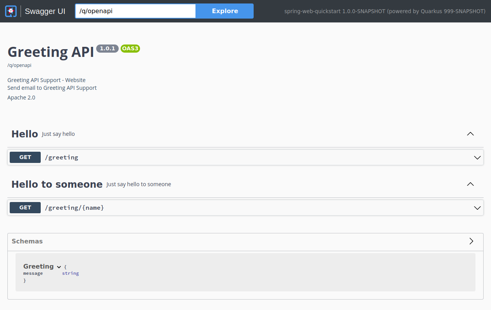

Quarkus Extension for Spring Web API
While users are encouraged to use JAX-RS annotation for defining REST endpoints, Quarkus provides a compatibility layer for Spring Web in the form of the spring-web extension.
This guide explains how a Quarkus application can leverage the well known Spring Web annotations to define RESTful services.
先决条件
要完成这个指南，你需要：
要完成这个指南，你需要：
-
大概15分钟
-
编辑器
-
安装JDK 11以上版本并正确配置了
JAVA_HOME -
Apache Maven 3.8.1+
-
如果你愿意的话，还可以选择使用Quarkus CLI
-
如果你想构建原生可执行程序，可以选择安装Mandrel或者GraalVM，并正确配置(或者使用Docker在容器中进行构建)
解决方案
我们建议您按照下一节的说明逐步创建应用程序。然而，您可以直接转到已完成的示例。
克隆 Git 仓库: git clone https://github.com/quarkusio/quarkus-quickstarts.git ，或下载一个 存档 。
The solution is located in the spring-web-quickstart directory.
创建Maven项目
首先，我们需要一个新的项目。使用以下命令创建一个新的项目:
This command generates a project which imports the spring-web extension.
If you already have your Quarkus project configured, you can add the spring-web extension to your project by running the following command in your project base directory:
quarkus extension add 'spring-web,resteasy-reactive-jackson'./mvnw quarkus:add-extension -Dextensions="spring-web,resteasy-reactive-jackson"./gradlew addExtension --extensions="spring-web,resteasy-reactive-jackson"这会将以下内容添加到你的构建文件中:
<dependency>
<groupId>io.quarkus</groupId>
<artifactId>quarkus-spring-web</artifactId>
</dependency>
<dependency>
<groupId>io.quarkus</groupId>
<artifactId>quarkus-resteasy-reactive-jackson</artifactId>
</dependency>implementation("io.quarkus:quarkus-spring-web")
implementation("io.quarkus:quarkus-resteasy-reactive-jackson")|
|
GreetingController
Create the src/main/java/org/acme/spring/web/GreetingController.java file, a controller with the Spring Web annotations to define our REST endpoint, as follows:
package org.acme.spring.web;
import org.springframework.web.bind.annotation.GetMapping;
import org.springframework.web.bind.annotation.RequestMapping;
import org.springframework.web.bind.annotation.RestController;
@RestController
@RequestMapping("/greeting")
public class GreetingController {
@GetMapping
public String hello() {
return "hello";
}
}GreetingControllerTest
Note that a test for the controller has been created as well:
package org.acme.spring.web;
import io.quarkus.test.junit.QuarkusTest;
import org.junit.jupiter.api.Test;
import static io.restassured.RestAssured.given;
import static org.hamcrest.CoreMatchers.is;
@QuarkusTest
public class GreetingControllerTest {
@Test
public void testHelloEndpoint() {
given()
.when().get("/greeting")
.then()
.statusCode(200)
.body(is("hello"));
}
}打包并运行该应用程序
使用以下命令运行该应用程序:
quarkus dev./mvnw quarkus:dev./gradlew --console=plain quarkusDev在你的浏览器中打开 http://localhost:8080/greeting 网页。
The result should be: {"message": "hello"}.
以本地可执行文件的方式运行该应用程序
You can generate the native executable with:
quarkus build --native./mvnw package -Dnative./gradlew build -Dquarkus.package.type=nativeGoing further with an endpoint returning JSON
The GreetingController above was an example of a very simple endpoint. In many cases however it is required to return JSON content. The following example illustrates how that could be achieved using a Spring RestController:
import org.springframework.web.bind.annotation.GetMapping;
import org.springframework.web.bind.annotation.PathVariable;
import org.springframework.web.bind.annotation.RequestMapping;
import org.springframework.web.bind.annotation.RestController;
@RestController
@RequestMapping("/greeting")
public class GreetingController {
@GetMapping("/{name}")
public Greeting hello(@PathVariable(name = "name") String name) {
return new Greeting("hello " + name);
}
public static class Greeting {
private final String message;
public Greeting(String message) {
this.message = message;
}
public String getMessage(){
return message;
}
}
}The corresponding test could look like:
package org.acme.spring.web;
import io.quarkus.test.junit.QuarkusTest;
import org.junit.jupiter.api.Test;
import static io.restassured.RestAssured.given;
import static org.hamcrest.CoreMatchers.is;
@QuarkusTest
public class GreetingControllerTest {
@Test
public void testHelloEndpoint() {
given()
.when().get("/greeting/quarkus")
.then()
.statusCode(200)
.body("message", is("hello quarkus"));
}
}It should be noted that when using the Spring Web support in Quarkus, Jackson is automatically added to the classpath and properly setup.
Adding OpenAPI and Swagger-UI
You can add support for OpenAPI and Swagger-UI by using the quarkus-smallrye-openapi extension.
Add the extension by running this command:
./mvnw quarkus:add-extension -Dextensions="io.quarkus:quarkus-smallrye-openapi"这将在你的 pom.xml 中添加以下内容：
<dependency>
<groupId>io.quarkus</groupId>
<artifactId>quarkus-smallrye-openapi</artifactId>
</dependency>This is enough to generate a basic OpenAPI schema document from your REST Endpoints:
curl http://localhost:8080/q/openapiYou will see the generated OpenAPI schema document:
---
openapi: 3.0.1
info:
title: Generated API
version: "1.0"
paths:
/greeting:
get:
responses:
"200":
description: OK
content:
'*/*':
schema:
type: string
/greeting/{name}:
get:
parameters:
- name: name
in: path
required: true
schema:
type: string
responses:
"200":
description: OK
content:
'application/json':
schema:
$ref: '#/components/schemas/Greeting'
components:
schemas:
Greeting:
type: object
properties:
message:
type: stringAlso see the OpenAPI Guide
Adding MicroProfile OpenAPI Annotations
You can use MicroProfile OpenAPI to better document your schema, example, adding the following to the class level of the GreetingController:
@OpenAPIDefinition(
info = @Info(
title="Greeting API",
version = "1.0.1",
contact = @Contact(
name = "Greeting API Support",
url = "http://exampleurl.com/contact",
email = "techsupport@example.com"),
license = @License(
name = "Apache 2.0",
url = "https://www.apache.org/licenses/LICENSE-2.0.html"))
)And describe your endpoints like this:
@Tag(name = "Hello", description = "Just say hello")
@GetMapping(produces=MediaType.TEXT_PLAIN_VALUE)
public String hello() {
return "hello";
}
@GetMapping(value = "/{name}", produces=MediaType.APPLICATION_JSON_VALUE)
@Tag(name = "Hello to someone", description = "Just say hello to someone")
public Greeting hello(@PathVariable(name = "name") String name) {
return new Greeting("hello " + name);
}will generate this OpenAPI schema:
---
openapi: 3.0.1
info:
title: Greeting API
contact:
name: Greeting API Support
url: http://exampleurl.com/contact
email: techsupport@example.com
license:
name: Apache 2.0
url: https://www.apache.org/licenses/LICENSE-2.0.html
version: 1.0.1
tags:
- name: Hello
description: Just say hello
- name: Hello to someone
description: Just say hello to someone
paths:
/greeting:
get:
tags:
- Hello
responses:
"200":
description: OK
content:
'*/*':
schema:
type: string
/greeting/{name}:
get:
tags:
- Hello to someone
parameters:
- name: name
in: path
required: true
schema:
type: string
responses:
"200":
description: OK
content:
'*/*':
schema:
$ref: '#/components/schemas/Greeting'
components:
schemas:
Greeting:
type: object
properties:
message:
type: stringUsing Swagger UI
Swagger UI is included by default when running in Dev or Test mode, and can optionally be added to Prod mode. See the Swagger UI Guide for more details.
Navigate to localhost:8080/q/swagger-ui/ and you will see the Swagger UI screen:

Supported Spring Web functionalities
Quarkus currently supports a subset of the functionalities that Spring Web provides. More specifically Quarkus supports the REST related features of Spring Web (think of @RestController instead of @Controller).
Annotations
The table below summarizes the supported annotations:
| Name | 备注 |
|---|---|
@RestController |
|
@RequestMapping |
|
@GetMapping |
|
@PostMapping |
|
@PutMapping |
|
@DeleteMapping |
|
@PatchMapping |
|
@RequestParam |
|
@RequestHeader |
|
@MatrixVariable |
|
@PathVariable |
|
@CookieValue |
|
@RequestBody |
|
@ResponseStatus |
|
@ExceptionHandler |
Can only be used in a @RestControllerAdvice class, not on a per-controller basis |
@RestControllerAdvice |
Only the @ExceptionHandler capability is supported |
Controller method return types
The following method return types are supported:
-
Primitive types
-
String (which will be used as a literal, no Spring MVC view support is provided)
-
POJO classes which will be serialized via JSON
-
org.springframework.http.ResponseEntity
Controller method parameter types
In addition to the method parameters that can be annotated with the appropriate Spring Web annotations from the previous table, javax.servlet.http.HttpServletRequest and javax.servlet.http.HttpServletResponse are also supported. For this to function however, users need to add the quarkus-undertow dependency.
Exception handler method return types
The following method return types are supported:
-
org.springframework.http.ResponseEntity -
java.util.Map
Other return types mentioned in the Spring ExceptionHandler javadoc are not supported.
Exception handler method parameter types
The following parameter types are supported, in arbitrary order:
-
An exception argument: declared as a general
Exceptionor as a more specific exception. This also serves as a mapping hint if the annotation itself does not narrow the exception types through itsvalue(). -
Request and/or response objects (typically from the Servlet API). You may choose any specific request/response type, e.g.
ServletRequest/HttpServletRequest. To use Servlet API, thequarkus-undertowdependency needs to be added.
Other parameter types mentioned in the Spring ExceptionHandler javadoc are not supported.
重要技术说明
Please note that the Spring support in Quarkus does not start a Spring Application Context nor are any Spring infrastructure classes run. Spring classes and annotations are only used for reading metadata and / or are used as user code method return types or parameter types. What that means for end users, is that adding arbitrary Spring libraries will not have any effect. Moreover, Spring infrastructure classes (like org.springframework.beans.factory.config.BeanPostProcessor for example) will not be executed.
Conversion Table
The following table shows how Spring Web annotations can be converted to JAX-RS annotations.
| Spring | JAX-RS | 备注 |
|---|---|---|
@RestController |
There is no equivalent in JAX-RS. Annotating a class with @Path suffices |
|
@RequestMapping(path="/api") |
@Path("/api") |
|
@RequestMapping(consumes="application/json") |
@Consumes("application/json") |
|
@RequestMapping(produces="application/json") |
@Produces("application/json") |
|
@RequestParam |
@QueryParam |
|
@PathVariable |
@PathParam |
|
@RequestBody |
No equivalent in JAX-RS. Method parameters corresponding to the body of the request are handled in JAX-RS without requiring any annotation |
|
@RestControllerAdvice |
No equivalent in JAX-RS |
|
@ResponseStatus |
No equivalent in JAX-RS |
|
@ExceptionHandler |
No equivalent annotation in JAX-RS. Exceptions are handled by implementing |
更多 Spring 指南
Quarkus拥有更多的Spring兼容特性。获取更多细节请参阅以下指南: